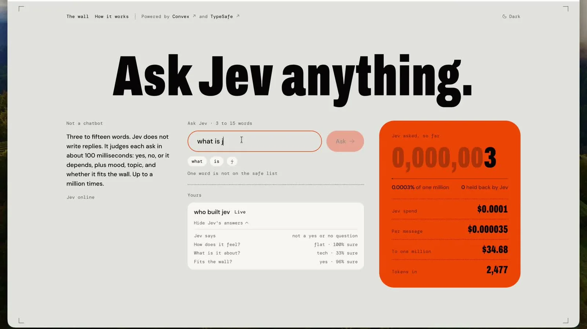
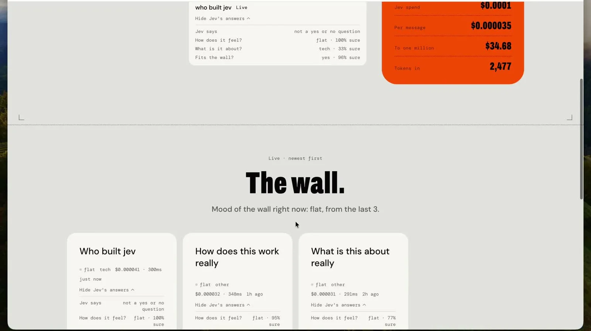

体験
「Not a chatbot」と最初に断り、返ってくるのが文章ではなく判断であることを、送る前に伝えている。判断は、質問ごとのカードと、全員で共有する壁の両方に現れる。
- 語数の制限と単語のチップが、送れる形を入力の途中で示す。安全な語の一覧にない単語は、送る前に指摘される。
- yesかnoで答えられない質問には、「not a yes or no question」と返す。無理にどちらかへ寄せない。
- 「Fits the wall?」の判断と、「held back by Jev」の件数が、公開する前のふるいがあることを示す。何が保留されたかの中身は見えない。
- カウンターと費用（1件あたり、100万件まで）が常に出ている。判断が安く速いことを、説明ではなく数字で見せている。
- 壁は追記されるだけである。載った後に直す・消す・異議を申し立てる手段は確認されていない。公開の場に判断つきで残ることを、送る人がどこまで理解できるかが論点になる。
キャプチャ
{kind=link}

（原寸の画像を開く）{kind=link}

（原寸の画像を開く）見る箇所1枚目の「Not a chatbot」の説明、「3 to 15 words」の入力欄と単語のチップ、「One word is not on the safe list」、「Yours」のカード、右のカウンターと費用。2枚目の「The wall.」と、壁全体の雰囲気を示す1行、並んだカード
入力から画面の変化まで
-
判断への入力
3語から15語の質問。入力中の単語がチップで並び、「Ready · 3 of 15」のように語数が出る。1枚目では、入力の途中で「One word is not on the safe list」と表示されている。
-
Jevの判断
サイトの説明では、yes・no・it depends、雰囲気、話題、壁に載せてよいか、を判断する。1枚目のカードには「Jev says: not a yes or no question」「How does it feel? flat · 100% sure」「What is it about? tech · 33% sure」「Fits the wall? yes · 96% sure」と出ている。
-
結果がUIをどう変えるか
質問は「Yours」のカードになり、答えを開閉できる。右のカウンター（0,000,003）、費用、トークン数が増える。壁には新しい順にカードが並び、「Mood of the wall right now: flat, from the last 3.」と全体の雰囲気が1行で出る。
- 判断型の見立て
- 複合推定
- 1つの質問のカードに、yes/noの可否、雰囲気、話題、壁に載せてよいか、の答えと割合が並ぶことからの見立て。画面には質問型の名前が出ていない。
Jevとの適合
1つの短い文に対して、複数の決まった問いに同時に答える使い方で、文章の生成を必要としない。サイトは「about 100 milliseconds」と説明し、壁のカードにも1件ごとの所要時間（例：300ms）が出ている。公開の前のふるいにも同じ判断を使っており、速さが体験の前提になっている。ただし、判断の妥当性は示されていない。
確認範囲と未確認事項
作者による投稿動画から静止画を確認。公開サイトがあり、調査時に無害な質問を送って、カードとカウンターの変化を確かめた記録がある。壁に載った項目を、編集・削除・異議申し立てする手段は確認されていない。「% sure」の値が何を意味するか、どう計算されるかは示されていない。費用や速度の表示は、サイト自身の表示であり、こちらでは測っていない。
- 確認済み動画から得た2枚の静止画に見える画面（説明文、入力欄とチップ、安全な語の指摘、「Yours」のカードと4つの答え、カウンターと費用、壁とカード）。調査時に無害な質問を送り、カードが返ってカウンターが増えたという操作記録
- 未検証「% sure」の意味と計算、6つとされる問いの全体、保留された質問の扱い、壁の項目の編集・削除・異議申し立て、費用と速度の実測、判断の妥当性
- 推定扱い質問型（複数の問いの組み合わせと見立て）。カードに複数の答えと割合が並ぶことからの見立てで、画面には質問型の名前が出ていない
- 引用動画から必要な範囲の静止画を切り出して引用（ブラウザの枠を除いた）。権利は作者に帰属する